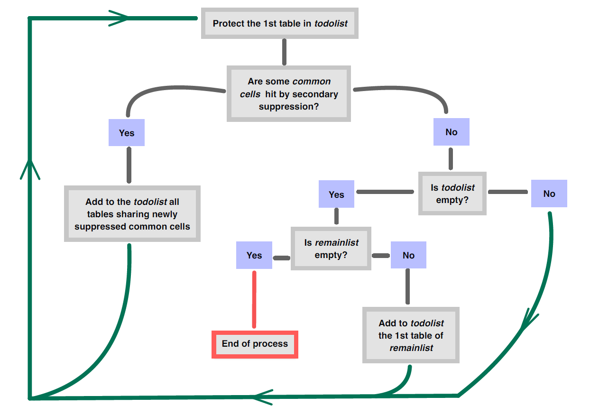

Protéger des tableaux liés


Package {rtauargus}
Source : Package {rtauargus}
vignettes/protect_multi_tables_fr.Rmd
protect_multi_tables_fr.RmdIntroduction
Dans le package rtauargus, il est maintenant possible de
protéger un ensemble de tableaux liés en une seule fois. La fonction
pour le faire s’appelle tab_multi_manager(). L’algorithme
très simple implémenté pour gérer la protection ne dépend pas du nombre
de tableaux. Par conséquent,la fonction peut théoriquement traiter un
nombre indéfini de tableaux. Bien sûr, l’utilisation pratique est
limitée par la puissance de l’ordinateur. Cependant, nous sommes
confiants sur la capacité de la fonction à traiter la plupart des cas.
Nous sommes intéressés par les cas que vous pourriez rencontrer et que
la fonction ne peut pas traiter.
Un lien entre deux (ou plusieurs) tableaux décrit les cellules communes des tableaux, c’est-à-dire les cellules qui sont présentent dans ces derniers. La fonction peut gérer tous les types de liens entre tableaux :
- les marges communes : lorsque deux tableaux partagent une (ou plusieurs) variables de ventilation ;
- liens entre les variables de réponse, lorsqu’il existe des équations reliant les variables ;
- hiérarchies non emboitées : lorsqu’une variable explicative est décomposée en deux (ou plus) hiérarchies non emboitées.
En fait, les deux derniers types peuvent être traités comme le premier. Le défi pour l’utilisateur est de définir correctement l’ensemble des tableaux. Une fois l’ensemble correctement défini, la fonction s’occupe de tout.
Tout d’abord, la vignette présente le fonctionnement de la fonction, puis les paramètres sont rapidement décrits. Dans la troisième partie, des exemples sont développés pour montrer comment l’utiliser dans diverses situations.
Comment tab_multi_manager() gère-t-il la protection
d’un ensemble de tableaux liées ?
Tout d’abord, la fonction fusionne tous les tableaux de l’ensemble. Dans la table obtenue, des variables booléennes sont ajoutées pour indiquer si une cellule appartient à un tableau ou non. Il y a donc autant de variables booléennes que de tableaux dans l’ensemble.Le tableau fusionné est un moyen très efficace pour détecter rapidement les cellules communes. Ainsi ,le rapport des suppressions est automatisé.
Le processus de protection est séquentiel : un tableau à la fois. Pour gérer la protection de toutes les tables et ne pas oublier une table ou des liens, l’algorithme implémenté fonctionne avec deux listes :
-
todolist: liste des tables qui doivent être protégées ; -
remainlist: liste des tables originales qui n’ont pas encore été protégées du tout.
Les deux listes sont initialisées comme suit :
-
todolist= première table de la liste originale ; -
remainlist= toutes les tables originales sauf la première.
Ensuite, l’algorithme se déroule comme indiqué dans la figure suivante :

Résultats
La fonction renvoie la liste originale des tableaux avec d’autres variables qui sont des variables booléennes (TRUE si la cellule doit être masquée sinon FALSE). , décrivant toutes les étapes du processus de suppression. Chaque étape prend en compte les résultats précédents et la dernière variable indique le statut final d’une cellule. Le statut final de chaque cellule est facilement déductible à l’aide de cette dernière variable et de l’état de suppression primaire calculé précédemment par l’utilisateur.
De plus, la fonction écrit tous les fichiers τ-Argus créés au cours
du processus. A la fin, seul le dernier processus pour chaque table est
disponible dans le répertoire choisi. Un journal
(journal.txt) est également fourni. Il décrit chaque étape
du processus de suppression : Quelle table est protégée, combien de
nouvelles cellules communes ont été atteintes par la suppression
secondaire. À la fin du processus, il décrit toutes les cellules
communes qui ont été touchées, en mentionnant l’itération à laquelle
chacune a été masquée.
Quelques détails sur les paramètres de `tab_multi_manager()``
dir_name le répertoire qui contiendra tous les fichiers créés, s’il n’existe pas, il sera créé. exemple : dir_name = “my_directory”.
hrc Un vecteur nommé spécifiant le chemin vers le fichier hrc pour chaque variable hiérarchique. exemple : c(ACTIVITY = “chemin_vers_fichier/act.hrc”, NUTS = “chemin_vers_fichier/nuts.hrc” )
-
alt_hrc Une liste nommée utile pour traiter les hiérarchies non emboitées. Les noms de la liste sont les noms des tableaux pour lesquelles une autre hiérarchie(non emboitée en général) doit être utilisée. exemple : Si T1 et T2 ont une variable explicative, appelée ACTIVITY, et la même variable de réponse, mais la variable
ACTIVITYn’a pas la même hiérarchie dans les les deux tables. Supposons que les hiérarchies (act1.hrc et act2.hrc) ne sont pas emboitées. Dans ce cas, nous écrivons les deux arguments comme suit :- hrc = c(ACTIVITY = “path_to_file/act_1.hrc”) : Par défaut, cette hiérarchie sera utilisée pour la variable ACTIVITY.
- alt_hrc = list(T2 = c(ACTIVITY = “chemin_vers_fichier/act_2.hrc”)) : Dans la table T2, la hiérarchie alternative sera utilisée.
totcode Le code du total pour chaque variable explicative. Il est recommandé d’utiliser le même même code de total pour chaque variable. Si par exemple le code est “Total” pour toutes les variables. La syntaxe qsuivante est autorisée : totcode = “Total”
Sinon, l’input attendue est une liste spécifiant le code total pour chaque variable explicative. Par exemple : totcode = list(ACTIVITY = “Total”, NUTS = “FR”, SIZE = “Ensemble”, CJ = “Total”)
Attention : Si les totaux ne sont pas dans la table, ils seront calculés par Tau-Argus, mais ils ne seront pas éligibles pour la suppression primaire. Il est donc nécessaire de les fournir dans la table de départ.
alt_totcode Une liste nommée pour les codes de totaux alternatifs. Voir
alt_hrcpour l’utilisation.value Le nom de colonne de la variable de réponse dans les tableauxs, il DOIT identique pour chaque table. Par exemple : valeur = “turnover”. Valeur par défaut : “value”.
freq Le nom de colonne de la variable de fréquence dans les tableaux, il DOIT être le même nom pour chaque tableau. Par exemple : freq = “frequency” Valeur par défaut : “freq”.
secret_var Le nom de la variable booléenne spécifiant le secret primaire dans les tables, il DOIT être le même nom pour chaque table. Par exemple : secret_var = “is_secret_prim”. Valeur par défaut : “is_secret_prim”.
suppression L’algorithme requis pour effectuer la suppression secondaire, expliqué dans la vignette safety_rules. Si Modular est choisi, après la après la première itération sur une table donnée, les options singleton, multi-singleton et minFreq sont désactivées. défaut : MOD(1,5,1,0,0)”
ip_start Les intervalles de protection pour la première itération sur une table donnée (nombre entier) par défaut : 10
ip_end Les intervalles de protection pour la deuxième itération sur une table (nombre entier) par défaut : 0
num_iter_max Nombre d’itération maximum sur un tableau, ce paramètre est ici pour assurer le fait que la fonction va s’arrêter. En pratique on n’atteint jamais la limite de 10. par défaut : 10
Quelques exemples
Spécifions l’emplacement du fichier TauArgus.exe sur notre ordinateur :
``{r version} options( rtauargus.tauargus_exe = “Y:/Logiciels/TauArgus/TauArgus4.2.3/TauArgus.exe” )
## Comment protéger 4 tableaux liés en même temps
Dans l'exemple suivant, nous allons protéger un ensemble de 4 tableaux liés partageant
la même variable de réponse, à savoir le chiffre d'affaires.
### Préparation des données
``` r
data("turnover_act_size")
data("turnover_act_cj")
data ("turnover_nuts_size")
data("turnover_nuts_cj")ACTIVITY X SIZE nommé turnover_act_size ACTIVITY X CJ nommé turnover_act_cj NUTS X SIZE nommé turnover_nuts_size NUTS X CJ nommé turnover_nuts_cj
str(turnover_act_size)
#> tibble [414 x 5] (S3: tbl_df/tbl/data.frame)
#> $ ACTIVITY: chr [1:414] "AZ" "BE" "FZ" "GI" ...
#> $ SIZE : chr [1:414] "Total" "Total" "Total" "Total" ...
#> $ N_OBS : int [1:414] 405 12878 28043 62053 8135 8140 11961 41359 26686 25108 ...
#> $ TOT : num [1:414] 44475 24827613 8907311 26962063 8584917 ...
#> $ MAX : num [1:414] 6212 1442029 1065833 3084242 3957364 ...
str(turnover_nuts_cj)
#> tibble [452 x 5] (S3: tbl_df/tbl/data.frame)
#> $ NUTS : chr [1:452] "FR10" "FR21" "FR22" "FR23" ...
#> $ CJ : chr [1:452] "Total" "Total" "Total" "Total" ...
#> $ N_OBS: int [1:452] 38462 6769 4561 5090 8611 7811 5643 10411 8179 5163 ...
#> $ TOT : num [1:452] 33026385 2947560 1917663 3701935 5089279 ...
#> $ MAX : num [1:452] 3084242 544763 651848 298134 1165019 ...La première étape consiste à créer une liste contenant nos quatre tableaux, il est conseillé de de donner un nom à chaque table. En faisant cela, il sera plus facile de suivre le déroulement de la pose du secret secondaire.
list_data_4_tabs <- list(
act_size = turnover_act_size,
act_cj = turnover_act_cj,
nuts_size = turnover_nuts_size,
nuts_cj = turnover_nuts_cj
)
str(list_data_4_tabs)
#> List of 4
#> $ act_size : tibble [414 x 5] (S3: tbl_df/tbl/data.frame)
#> ..$ ACTIVITY: chr [1:414] "AZ" "BE" "FZ" "GI" ...
#> ..$ SIZE : chr [1:414] "Total" "Total" "Total" "Total" ...
#> ..$ N_OBS : int [1:414] 405 12878 28043 62053 8135 8140 11961 41359 26686 25108 ...
#> ..$ TOT : num [1:414] 44475 24827613 8907311 26962063 8584917 ...
#> ..$ MAX : num [1:414] 6212 1442029 1065833 3084242 3957364 ...
#> $ act_cj : tibble [406 x 5] (S3: tbl_df/tbl/data.frame)
#> ..$ ACTIVITY: chr [1:406] "AZ" "BE" "FZ" "GI" ...
#> ..$ CJ : chr [1:406] "Total" "Total" "Total" "Total" ...
#> ..$ N_OBS : int [1:406] 405 12878 28043 62053 8135 8140 11961 41359 26686 25108 ...
#> ..$ TOT : num [1:406] 44475 24827613 8907311 26962063 8584917 ...
#> ..$ MAX : num [1:406] 6212 1442029 1065833 3084242 3957364 ...
#> $ nuts_size: tibble [460 x 5] (S3: tbl_df/tbl/data.frame)
#> ..$ NUTS : chr [1:460] "FR10" "FR21" "FR22" "FR23" ...
#> ..$ SIZE : chr [1:460] "Total" "Total" "Total" "Total" ...
#> ..$ N_OBS: int [1:460] 38462 6769 4561 5090 8611 7811 5643 10411 8179 5163 ...
#> ..$ TOT : num [1:460] 33026385 2947560 1917663 3701935 5089279 ...
#> ..$ MAX : num [1:460] 3084242 544763 651848 298134 1165019 ...
#> $ nuts_cj : tibble [452 x 5] (S3: tbl_df/tbl/data.frame)
#> ..$ NUTS : chr [1:452] "FR10" "FR21" "FR22" "FR23" ...
#> ..$ CJ : chr [1:452] "Total" "Total" "Total" "Total" ...
#> ..$ N_OBS: int [1:452] 38462 6769 4561 5090 8611 7811 5643 10411 8179 5163 ...
#> ..$ TOT : num [1:452] 33026385 2947560 1917663 3701935 5089279 ...
#> ..$ MAX : num [1:452] 3084242 544763 651848 298134 1165019 ...Appliquer les règles de secret primaire
Ensuite, nous devons appliquer les règles de secret primaire pour chaque table. Ici, nous appliquons 2 règles : La règle de dominance à 85% NK(1,85) et la règle de fréquence avec un seuil fixé à 3.
list_data_4_tabs <- list_data_4_tabs %>%
purrr::map(
function(df){
df %>%
mutate(
is_secret_freq = N_OBS > 0 & N_OBS < 3,
is_secret_dom = ifelse(MAX == 0, FALSE, MAX/TOT>0.85),
is_secret_prim = is_secret_freq | is_secret_dom
)
}
)
str(list_data_4_tabs)
#> List of 4
#> $ act_size : tibble [414 x 8] (S3: tbl_df/tbl/data.frame)
#> ..$ ACTIVITY : chr [1:414] "AZ" "BE" "FZ" "GI" ...
#> ..$ SIZE : chr [1:414] "Total" "Total" "Total" "Total" ...
#> ..$ N_OBS : int [1:414] 405 12878 28043 62053 8135 8140 11961 41359 26686 25108 ...
#> ..$ TOT : num [1:414] 44475 24827613 8907311 26962063 8584917 ...
#> ..$ MAX : num [1:414] 6212 1442029 1065833 3084242 3957364 ...
#> ..$ is_secret_freq: logi [1:414] FALSE FALSE FALSE FALSE FALSE FALSE ...
#> ..$ is_secret_dom : logi [1:414] FALSE FALSE FALSE FALSE FALSE FALSE ...
#> ..$ is_secret_prim: logi [1:414] FALSE FALSE FALSE FALSE FALSE FALSE ...
#> $ act_cj : tibble [406 x 8] (S3: tbl_df/tbl/data.frame)
#> ..$ ACTIVITY : chr [1:406] "AZ" "BE" "FZ" "GI" ...
#> ..$ CJ : chr [1:406] "Total" "Total" "Total" "Total" ...
#> ..$ N_OBS : int [1:406] 405 12878 28043 62053 8135 8140 11961 41359 26686 25108 ...
#> ..$ TOT : num [1:406] 44475 24827613 8907311 26962063 8584917 ...
#> ..$ MAX : num [1:406] 6212 1442029 1065833 3084242 3957364 ...
#> ..$ is_secret_freq: logi [1:406] FALSE FALSE FALSE FALSE FALSE FALSE ...
#> ..$ is_secret_dom : logi [1:406] FALSE FALSE FALSE FALSE FALSE FALSE ...
#> ..$ is_secret_prim: logi [1:406] FALSE FALSE FALSE FALSE FALSE FALSE ...
#> $ nuts_size: tibble [460 x 8] (S3: tbl_df/tbl/data.frame)
#> ..$ NUTS : chr [1:460] "FR10" "FR21" "FR22" "FR23" ...
#> ..$ SIZE : chr [1:460] "Total" "Total" "Total" "Total" ...
#> ..$ N_OBS : int [1:460] 38462 6769 4561 5090 8611 7811 5643 10411 8179 5163 ...
#> ..$ TOT : num [1:460] 33026385 2947560 1917663 3701935 5089279 ...
#> ..$ MAX : num [1:460] 3084242 544763 651848 298134 1165019 ...
#> ..$ is_secret_freq: logi [1:460] FALSE FALSE FALSE FALSE FALSE FALSE ...
#> ..$ is_secret_dom : logi [1:460] FALSE FALSE FALSE FALSE FALSE FALSE ...
#> ..$ is_secret_prim: logi [1:460] FALSE FALSE FALSE FALSE FALSE FALSE ...
#> $ nuts_cj : tibble [452 x 8] (S3: tbl_df/tbl/data.frame)
#> ..$ NUTS : chr [1:452] "FR10" "FR21" "FR22" "FR23" ...
#> ..$ CJ : chr [1:452] "Total" "Total" "Total" "Total" ...
#> ..$ N_OBS : int [1:452] 38462 6769 4561 5090 8611 7811 5643 10411 8179 5163 ...
#> ..$ TOT : num [1:452] 33026385 2947560 1917663 3701935 5089279 ...
#> ..$ MAX : num [1:452] 3084242 544763 651848 298134 1165019 ...
#> ..$ is_secret_freq: logi [1:452] FALSE FALSE FALSE FALSE FALSE FALSE ...
#> ..$ is_secret_dom : logi [1:452] FALSE FALSE FALSE FALSE FALSE FALSE ...
#> ..$ is_secret_prim: logi [1:452] FALSE FALSE FALSE FALSE FALSE FALSE ...Trois variables ont été ajoutées à chaque tableau. Seule la dernière sera utilisée pendant le processus de suppression. Les deux autres seront utiles pour indiquer l’état final des cellules.
Préparation de la liste des variables explicatives
Nous allons ensuite créer la liste des variables explicatives des tableaux. Dans notre cas, les variables explicatives sont les 2 premières colonnes de chaque tableau.
nom_var_list <- purrr::map(
list_data_4_tabs,
function(data) colnames(data)[1:2]
)
nom_var_list
#> $act_size
#> [1] "ACTIVITY" "SIZE"
#>
#> $act_cj
#> [1] "ACTIVITY" "CJ"
#>
#> $nuts_size
#> [1] "NUTS" "SIZE"
#>
#> $nuts_cj
#> [1] "NUTS" "CJ"Les noms de la liste doivent être identiques aux noms des tableaux
présent dans le paramètre list_tables.
Préparation de la liste des codes pour les totaux
Les modalités utilisées pour mentionner le total de chaque variable doivent être déclarées par l’utilisateur, dans une liste nominative. Toutefois, lorsque toutes les variables ont la même modalité pour pour le total, l’information peut être spécifiée de la manière suivante :
total_codes <- "Total"Préparation des fichiers hiérarchiques
ACTIVITY et NUTS sont duex variables
hiérarchiques.On utilise une table de correspondance pour chacunes
d’entre elles pour créer le fichier .hrc dont τ-Argus a besoin.
hrc_file_activity <- write_hrc2(
corr_table = activity_corr_table,
file_name = "hrc/activity.hrc"
)
hrc_file_nuts <- write_hrc2(
corr_table = nuts23_fr_corr_table,
file_name = "hrc/nuts.hrc"
)Pour spécifier les nom des fichiers hrc, on crée un vecteur nommé (ou une liste) :
hrc_files <- list(
ACTIVITY = hrc_file_activity,
NUTS = hrc_file_nuts
)Les noms du vecteur doivent être identiques aux noms des variables hiérarchiques présentes dans la table
Protéger tous les tableaux en un seul appel
res <- tab_multi_manager(
list_tables = list_data_4_tabs,
list_explanatory_vars = nom_var_list,
dir_name = "tauargus_files/ex4",
hrc = hrc_files,
totcode = total_codes,
value = "TOT",
freq = "N_OBS",
secret_var = "is_secret_prim"
)
#> --- Current table to treat: act_size ---
#> --- Current table to treat: act_cj ---
#> --- Current table to treat: act_size ---
#> --- Current table to treat: nuts_size ---
#> --- Current table to treat: nuts_cj ---Résultats
list_with_status <- res %>%
purrr::map(
function(df){
df %>%
rename_with(~"final_suppress", last_col()) %>%
mutate(
status = case_when(
is_secret_freq ~ "A",
is_secret_dom ~ "B",
final_suppress ~ "D",
TRUE ~"V"
)
) %>%
select(1:2, TOT, N_OBS, status)
}
)
str(list_with_status$act_size)
#> 'data.frame': 414 obs. of 5 variables:
#> $ ACTIVITY: chr "01" "01" "02" "02" ...
#> $ SIZE : chr "Total" "tr1" "Total" "tr1" ...
#> $ TOT : num 853 853 43623 35503 8120 ...
#> $ N_OBS : int 18 18 387 381 6 1 1 4 4 84 ...
#> $ status : chr "V" "V" "V" "V" ...
list_with_status %>%
purrr::iwalk(
function(df,name){
cat(name, "\n")
df %>% count(status) %>% print()
}
)
#> act_size
#> status n
#> 1 A 52
#> 2 B 25
#> 3 D 83
#> 4 V 254
#> act_cj
#> status n
#> 1 A 35
#> 2 B 25
#> 3 D 88
#> 4 V 258
#> nuts_size
#> status n
#> 1 A 55
#> 2 B 17
#> 3 D 82
#> 4 V 306
#> nuts_cj
#> status n
#> 1 A 45
#> 2 B 20
#> 3 D 101
#> 4 V 286Traiter les hiérarchies non emboitées
Supposons que l’on veuille protéger les deux tableaux croisant
ACTIVITY et SIZE d’une part et
ACTIVITY et CJ d’autre part. La variable
ACTIVITY est une variable hiérarchique. De plus, dans ce
cas, nous aimerions publier un sous-total, appelé D_TO_M,
en plus de ceux de la activity_corr_table. Ce sous-total
est la somme des étiquettes D à M du niveau
A21. Comme ce sous-total ne peut pas être inséré dans la
hiérarchie principale, cela nous conduit à un cas de hiérarchies non
emboitées.
Pour confirmer le non-emboîtement des deux hiérarchies, affichons un extrait des deux.
Extrait de la hiérarchie principale :
sdcHierarchies::hier_create(
root="Total",
nodes = activity_corr_table$A10 %>% unique()
) %>%
sdcHierarchies::hier_display()
#> Total
#> +-AZ
#> +-BE
#> +-FZ
#> +-GI
#> +-JZ
#> +-KZ
#> +-LZ
#> +-MN
#> +-OQ
#> \-RUExtrait de la hiérarchie alternative:
sdcHierarchies::hier_create(
root="D_TO_M",
nodes = activity_corr_table_D_TO_M$A21
) %>%
sdcHierarchies::hier_display()
#> D_TO_M
#> +-D
#> +-E
#> +-F
#> +-G
#> +-H
#> +-I
#> +-J
#> +-K
#> +-L
#> \-MPour traiter ce cas, l’approche préférée est de créer un troisième
tableau croisant ACTIVITY et SIZE avec les
modalités D à M et le sous-total D_TO_M :
turnover_act_size_D_TO_M <- turnover_act_size %>%
filter(
ACTIVITY %in% LETTERS[4:13]
) %>%
bind_rows(
turnover_act_size %>%
filter(
ACTIVITY %in% LETTERS[4:13]
) %>%
group_by(SIZE) %>%
summarise(N_OBS = sum(N_OBS), TOT = sum(TOT), MAX = max(MAX)) %>%
mutate(ACTIVITY = "D_TO_M")
)
str(turnover_act_size_D_TO_M)
#> tibble [44 x 5] (S3: tbl_df/tbl/data.frame)
#> $ ACTIVITY: chr [1:44] "D" "E" "F" "G" ...
#> $ SIZE : chr [1:44] "Total" "Total" "Total" "Total" ...
#> $ N_OBS : int [1:44] 1411 828 28043 41624 6524 13905 8135 8140 11961 28221 ...
#> $ TOT : num [1:44] 2438454 2264393 8907311 18244309 6273334 ...
#> $ MAX : num [1:44] 981369 306905 1065833 765244 3084242 ...Créons le fichier correspondant à cette hiérarchie :
activity_corr_table_D_TO_M <- activity_corr_table %>%
filter(A21 %in% LETTERS[4:13]) %>%
select(-A88) %>%
mutate(A10 = "D_TO_M") %>%
unique()
hrc_file_activity_D_TO_M <- activity_corr_table_D_TO_M %>%
select(-1) %>%
write_hrc2(file_name = "hrc/activity_D_TO_M")Ensuite, construisons la liste des tableaux et appliquons les règles de secret primaire dessus.
list_data_3_tabs_nn <- list(
act_size = turnover_act_size,
act_size_D_TO_M = turnover_act_size_D_TO_M,
act_cj = turnover_act_cj
) %>%
purrr::map(
function(df){
df %>%
mutate(
is_secret_freq = N_OBS > 0 & N_OBS < 3,
is_secret_dom = ifelse(MAX == 0, FALSE, MAX/TOT>0.85),
is_secret_prim = is_secret_freq | is_secret_dom
)
}
)Les arguments hrc et alt_hrc sont utilisés
pour mentionner les deux hiérarchies de la variable
ACTIVITY :
-
hrcest utilisé comme dans l’exemple précédent (un vecteur nommé où les noms sont les différentes variables hiérarchiques apparaissant dans les tableaux et les valeurs sont les noms des fichiers). Ainsi, le fichier de hiérarchie par défaut sera pris dans ce vecteur. -
alt_hrcn’est utilisé que pour mentionner les hiérarchies alternatives. Cet argument est une liste nommée où les noms sont les tableaux où les hiérarchies alternatives doivent être appliquées.
Le même raisonnement est utilisé pour remplir l’argument
alt_totcode.
res <- tab_multi_manager(
list_tables = list_data_3_tabs_nn,
list_explanatory_vars = list(
act_size = c("ACTIVITY", "SIZE"),
act_size_D_TO_M = c("ACTIVITY", "SIZE"),
act_cj = c("ACTIVITY", "CJ")
),
hrc = c(ACTIVITY = hrc_file_activity),
alt_hrc = list(
act_size_D_TO_M = c(ACTIVITY = hrc_file_activity_D_TO_M)
),
dir_name = "tauargus_files/ex5",
value = "TOT",
freq = "N_OBS",
secret_var = "is_secret_prim",
totcode = "Total",
alt_totcode = list(
act_size_D_TO_M = c(ACTIVITY = "D_TO_M")
)
)
#> --- Current table to treat: act_size ---
#> --- Current table to treat: act_size_D_TO_M ---
#> --- Current table to treat: act_cj ---
#> --- Current table to treat: act_size ---
#> --- Current table to treat: act_size_D_TO_M ---
#> --- Current table to treat: act_size ---
#> --- Current table to treat: act_cj ---Détail de la vignette
- Authors: Julien
Jamme &
Nathanael
Rastout
- Last update: 17/02/2025
- Version of rtauargus used: 1.2.999
- Version of τ-Argus used : TauArgus 4.2.3
- R version used : 4.3.3